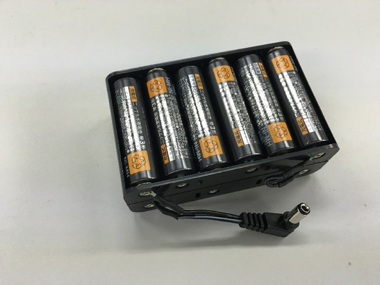

ZMP RoboCar 1/10 2016 Reference Manual
2. ハードウェアマニュアル
はじめに
RoboCar 1/10 2016は、2系統のバッテリーを使用します。
電源スイッチにより、システムが起動します。駆動系の電源のON/OFFは、ソフトウェアから行います。
移動などの操作は、すべてソフトウェアから行います。
以下にシステム結線図を示します。
図: 結線図
外観
以下に各パーツ名称を示します。
各パーツの仕様、寸法、ボードコネクタの詳細情報は、
CD\Documents\Hardwareフォルダ内を参照してください。
図: パーツ名称
図: パーツ名称(左側面）
図: パーツ名称(右側面）
CPUボードへのアクセス
CPUボードへのアクセスには、トッププレートを外します。
図: トッププレートの取り外し
ネジを8か所外すと、トッププレートが外れます。
図: CPUボード
カメラ、ケーブルに気を付けながら外します。
取り付ける時は、トッププレートの向きに注意してください。
ボトムプレートへのアクセス
ボトムプレートには、BASEボード、PWボードが設置されています。
オプションセンサ電源用端子台、IRセンサコネクタ、ヒューズなどへアクセスできます。

図: ミドルプレート開閉用ネジ
電源を切り、バッテリーを外し、2か所のネジを外します。
図: ミドルプレートオープン
ミドルプレートを傾けるようにして開けます。
ケーブルを挟んだり、引っ張ったりしないように気を付けてください。
閉じる時も同様に、ケーブルに十分注意して閉じてください。
CPUボード
RoboCarの制御をするためのCPUです。 PCアーキテクチャの小型ボードで、Linuxが動作します。

図: CPUボード
RoboCarの制御をするためのCPUです。
PCアーキテクチャの小型ボードで、Linuxが動作します。
モニタ、キーボード、マウスを接続することでLinuxにログインが可能です。
BASEボード

図: BASEボード
駆動用DCモータを駆動させ、速度制御を行います。
ジャイロセンサ、加速度センサ、エンコーダ、IRセンサ、など
センサ情報を取得します。
図: ヒューズ
モータ保護の為、ATCヒューズ(15A)が付いています。
駆動系システムが動作しない場合など、確認してください。
PWボード
図: PWボード
電源管理ボードです。端子台から、ＬＲＦなど、オプションセンサへも電源を供給できます。
端子台からは、最大12Ｖ/3Ａ、5Ｖ/3Ａを供給できます。
カメラボード

図: カメラボード
カメラボードです。取り外して、前後左右のいずれかへ付け替える事もできます。
使用時には、レンズカバーを外してください。
IRセンサ
図: IRセンサ取付け
IRセンサは、前後のIRブラケットに取り付けます。
各ブラケットには、30°の角度で最大7か所に、センサの取り付けができます。
バッテリの準備
はじめに2系統のバッテリーを、それぞれ充電してください。
駆動用バッテリー
バッテリー、充電器ともに付属しています。専用のものを使ってください。
- RoboCar 1/10 2016本体から取り外します。
- 付属の充電器に接続し、AC電源に接続し、充電完了を待ちます。
情報系バッテリー
市販の単三形の乾電池を12本用意してください。
NiH充電池を推奨します。
充電式の電池の場合、あらかじめ充電しておいてください。
※ACアダプタを使用することにより、継続してCPUボードを使用することもできます。
※ACアダプタにより、情報系バッテリーの充電はできません。
バッテリーの接続方法
以下のようにバッテリーを接続します。
駆動用バッテリー
- BASEボードのコネクタと接続します。
図: 接続
- バッテリ－は、車体下部(右側)のマジックテープにあわせて置き、固定します。
図: 固定
情報系バッテリー
- 電池ボックスに単三形乾電池を12本入れます。極性を間違えないように注意してください。

図: 電池ボックスに電池を装着
- バッテリのコネクタを本体に接続します。

図: コネクタの接続
バッテリー取扱いの注意
長時間使用しないときはバッテリーを抜いておいてください。バッテリーの過放電や故障の原因となります。
電源廻りの各部名称、働き
入力は②、③のいずれか、または両方に入力しても動作します。
両方の電源に入力してCPUボードのプログラミングを行い、
ACアダプタを外して走行実験を行うなど、スムーズな実験が行えます。
電源スイッチ
RoboCarの電源をON/OFFします。
情報系、駆動系の両方とも、ON/OFFされます。
スイッチONにするとLEDの(緑)が点灯します。
インジケータLED
③に入力された電源の電圧残量がLED１～４に表示されます。
(左からLED1,2,3,4の順番)
LED1:11.7V以上
LED2:12.6V以上
LED3:14.5V以上
LED4:15.2V以上
電圧異常時(低電圧、高電圧)にはLEDは全消灯します。